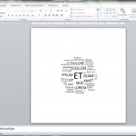

WordCloud in PowerPoint
Du hast einen nicht allzu langen Text* den du in eine WordCloud / TagCloud verwandeln möchtest, die du dann in PowerPoint verwenden kannst? Dann lade dir diese WordCloud-Excel-Vorlage herunter. Die Datei enthält ein VBA-Script, das zuerst einen beliebigen Text in einzelne Wörter zerlegt und diese zählt und sortiert. Danach wird eine PowerPoint-Folie erstellt, in der die Wörter in einer WordCloud dargestellt werden. Je öfter das Wort vorkommt, desto größer erscheint es auf der Folie. Die Wörter sind einfache Textfelder und können danach bearbeitet oder verschoben werden.
[caption id=“attachment_1495” align=“aligncenter” width=“150”] 
{kind=link}
Vorbereitung in Excel
Zunächst kopierst du deinen Text in das Feld für den Quelltext. Per VBA wird daraus bereits automatisch eine Liste mit den Häufigkeiten der Wörter erstellt.
Mit den Werten für die PowerPoint-Höhe und -Breite legst du die Abmessung der Folie in der Präsentation fest. Je größer die Folie, desto länger dauert das Rendern der WordCloud. Mit der Größe der Schriftart bestimmst du, wie groß das größte Wort ist. Über den Faktor Höhenkorrektur kannst du den vertikalen Abstand der Textfelder korrigieren. Über den Performance-Faktor lässt sich die Geschwindigkeit der Verarbeitung steuern. Je höher der Wert, desto schneller das Skript aber auch schlechter die Berechnung der Platzierung der Textfelder für die Wörter. Der Top-Wert legt fest, wie viele Wörter verarbeitet werden sollen.
Wenn du alles fertig eingestellt hast, drückst du auf Start und VBA verrichtet seine Arbeit.
Fertig.
*VBA und der Algorithmus sind eher nicht für lange Texte geeignet. Ein Text mit 349 unterschiedlichen Wörtern und 584 Wörtern insgesamt wird in 55 Sekunden gerendert.